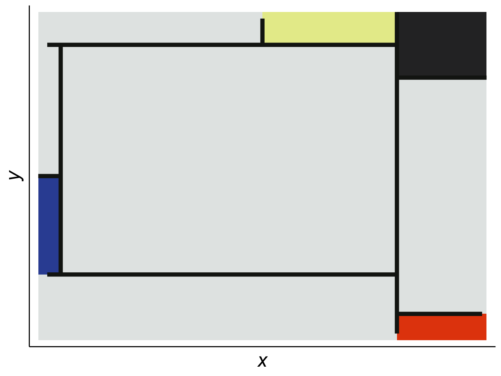
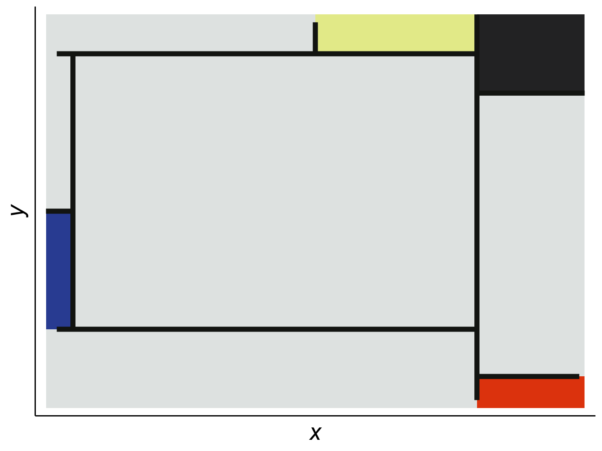

ggplot2In an experiment conducted by researchers from University College London (Mcmanus and Gesiak 2014), 277 participants were asked to look at several pairs of paintings: one of the pairs was an original by abstract painter Piet Mondrian, and the other was fake version that closely resembled it.1 The participants where asked:
When looking at the pictures you should decide overall which you thinks looks better, in that it looks nicer, it looks better organised, or it looks better balanced.
The results suggested that people could identify the originals with some degree of accuracy (\(\mu\) 54.7%, SE .40). This experiment “implies people know something about what makes a real Mondrian.” In other words, we have an intuition of proportion and beauty.

ggplot2One of the most fun things about data visualization is making things that are beautiful. In making them, you learn a lot about not just the patterns you are displaying, but the scope and limitations of the underlying data. Having taught courses on data viz for several years, I have found that there is a correlation between the effort put into making a plot beautiful and how accurately it conveys the intended message.
Data visualization plays numerous roles in the social sciences, from summarizing large amounts of information in a small space, to supporting claims about patterns and relationships among a vast array of indicators of human behavior.
Zinovyev (2010) identifies four types of visualizations in political science:
- Statistical graphics and infographics with extensive use of color, form, size, shape and style to superimpose many quantitative variables in the same chart or diagram
- Geographical information systems (GIS) to visualize geographically-linked data
- Graph visualization or network maps for representing relations between objects
- Projection of multidimensional data on low-dimensional screens with further visualization, data cartography
In addition, visualization is often the last part of a data analysis pipeline. To visualize a data set you must first answer some questions:
In other words, to create visualizations you must also know what data is (or not) out there (literature review), develop an intuition about what patterns you might find in it (research question/hypothesis), clean and wrangle lots of often messy data sets (methodology), create the visualization (results) and share it with your target audience (discussion). Think of the process as writing a small research paper. A single .png often speaks more than a thousand lines of code!
The examples used throughout this book are closely related to corruption since that is one of my main areas of interest. This also allows me to explore different types of data that social scientists are likely to encounter such as surveys, text, networks, geo-locations, administrative records (Big Data), and regression models.
All used data is open source, though it often comes through APIs2. Sometimes, to access these data sets you need a token or secret. For obvious reasons, I will not share my own tokens here, but I will show you where the information you need should go in the code. When possible, I will also provide a clean version of the data used so you can experiment with it.
To keep things as simple as possible, the book follows this syntax:
packages are placed inside a shaded box (e.g. ggplot2),functions() are also inside a shaded box, and followed by parentheses (e.g. mutate() from tidyverse or class() from base R),functions() are the same, but the package is explicitly called :: (e.g. reshape2::melt()),%in%), are also shaded, non-R commands are in bold (e.g. Ctrl + p),%>% will be used when possible in the code3 (i.e., we will mostly use the tidyverse syntax over base R).This book does not expect a lot of familiarity with R or programming, though some knowledge of statistics will be very helpful. The appendix covers the basics of working with R and RStudio during the first few sessions. Some tutorial videos on the basics of working with RStudio are available here. Similarly, you may also consult the following open-source books on R:4
The pseudo-Mondrians were created by jittering all the lines in the original but keeping the same relative positions.↩︎
API is short for application programming interface and it is a great way to get data directly from the source. Many data providers such as the World Bank offer APIs that connect directly to your R session.↩︎
For Windows users, the %>% shortcut in RStudio is Ctrl + Shift + M and for Mac users it is Cmd + Shift + M.↩︎
For a comprehensive list of R-related books, consult the R-Project Website↩︎